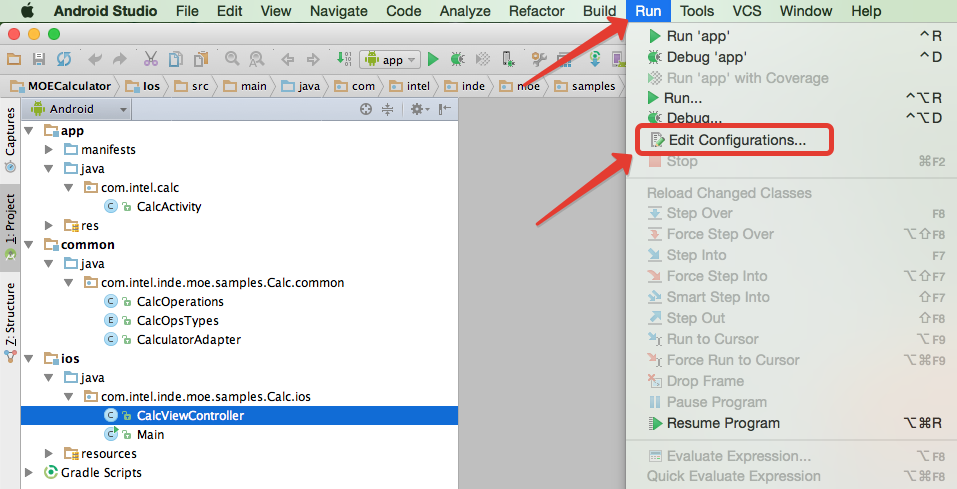

Multi-OS Engine Samples¶
The Multi-OS Engine samples live in 2 GitHub repositories:
Java samples: https://github.com/multi-os-engine/moe-samples-java
Kotlin samples: https://github.com/multi-os-engine/moe-samples-kotlin
To import a sample project into Android Studio, first clone the repository from GitHub and then choose “Import project (Eclipse, ADT, Gradle, etc.)” from the “Welcome window”
Select the sample folder (where you have cloned the sample repository from GitHub)
To run or debug the sample on iOS Simulator or iOS device, select “Run”->”Edit Configuration” from Android Studio menu bar
Click on “+” and choose “MOE iOS Application”:
You can select available SDK version, debug port and type of the simulator to run:
Also you can select physical iOS device connected to the host:
Click “run button” to run sample on a simulator or device:
Or click “debug button” to debug sample on simulator or device:
Build log files could be found in “<project_root>/<ios_module>/build/logs” folder.